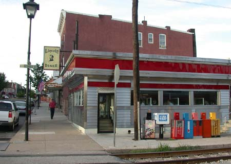

A Tribute to the Lincoln Diner / NK010727043204_420h

Most of us ate at the Gettysburg College cafeteria a couple of times and then migrated permanently to the fabulous Lincoln Diner on Carlisle St. A great place for breakfast, and sometimes for lunch and dinner too!